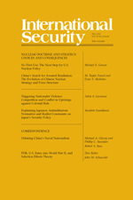
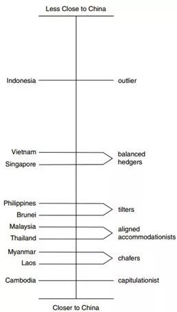

收录于合集

U.S.-ChinaRivalry in Southeast Asian
Power Shift or Competitive Coexistence?
作 者：
David Shambaugh（沈大伟）， 布鲁金斯学会外交政策项目、东亚政策中心、中国中心非常驻高级研究员
编 译：
Nicole Chen，国政学人外文编译小组成员
** 校 对：** ** ******诗夏
** ** ** ** 编 辑：******** ** ** ** ** ************晞哲
文章来源：
** International Security** , Vol.42,No.4(Spring 2018),pp.85-127
期刊简介：

《国际安全》是国际和国家安全领域的同行评议学术期刊。它成立于1976年，由哈佛大学贝尔弗科学与国际事务中心(Belfer Center for Science and International Affairs at Harvard University)编辑，麻省理工学院出版社(MIT Press)每年出版四次。据《引文》杂志报道，《华尔街日报》2014年的影响系数为4.455，在“国际关系”这一类别的85家期刊中排名第一。（来源：维基百科）
核心观点
特朗普领导下的美国正在远离国际社会、国际制度和国际义务，习近平领导下的中国在世界舞台上的行动增多，人们普遍认为东南亚地缘政治正在进行权力转移。作者认为东南亚的整体战略平衡仍是不稳定和竞争性的，中美在东南亚的竞争将不会结束。美国不会退出东南亚地区，而中国也不会成为这一地区的绝对力量。
** 具体论证** ： ****
东南亚地区一直具有重要的战略地位。在地缘政治上， 东南亚临近南海和马六甲海峡，影响着亚洲国家尤其是东北亚地区的能源进口； 在经济上， 东盟是全球第六大经济实体，随着中国经济放缓和运营成本的提高，东南亚成为跨国公司投资办厂的新地区； 在政治上， 东南亚政治多元化，拥有五种不同类型的政治体制； 外交上， 东盟促进了该地区的区域一体化、和平、安全和经济发展； 军事上， 东南亚正在追求区域军事现代化，除了老挝和柬埔寨，所有东盟国家都在增加国防和新设备的采购。
大国竞争是东南亚地区的常态，东南亚国家大多实行对冲战略和转变联盟战略。 对冲，即是避免过度接近、过度依赖某一大国而实行的中立政策。2012年奥巴马政府开启了“重返亚太”战略，东南亚则是该战略的中心地区。该战略起初在东南亚很受欢迎，逐渐地东南亚更多地将这一战略视为美国的花言巧语。“重返亚太”震惊了中国政府，刺激中国在该地区多个领域多个国家中扩大自己的存在，比如“一带一路”政策、亚投行等。 虽然东南亚国家似乎在更多地追随中国，但是作者认为有几个因素将影响东南亚国家疏远中国： 第一，美国在东南亚文化、外交、经济、安全、公众舆论等方面的大部分投资都超过了中国；第二，中国对东南亚国家过于苛刻会加大东南亚对中国的警惕；第三，东盟成员国自身具有自己的机构和重新调整外部联系的能力；第四，日澳等中等强国也会帮助东盟，避免其陷入大国竞争的困境。同时，东南亚各国与中国联系的紧密程度不一致。作者依据与中国关系的紧密程度将东盟十国划分为了六大类。一是，“投降主义者”，完全与中国结盟；二是，实际上依赖中国，主观上希望摆脱依赖，但是自己毫无选择；三是，“一致妥协者”，满意与中国的密切关系，并希望加强与中国的关系，同时又与美国保持联系，尤其是军事联系；四是，“倾斜者”，向中国倾斜，但又对中国在某些方面保持警惕；五是，“对冲者”，与美国保持军事联系，与中国保持经济联系；六是，“局外者”，与中美保持距离。
东南亚战略三角图

东南亚国家与中国的关系密切程度
美国与东南亚具有悠久的交往历史，但是国际社会普遍认为美国对东南亚的事务不感兴趣，只是断断续续地参与，东北亚、中亚以及其他地区的事务才是美国的优先选项。 在奥巴马政府时期，美国给予了东南亚前所未有的关注。奥巴马和东盟签署了《东盟友好合作条约》，将美国和东盟的关系升级为“战略伙伴关系”，并与东南亚国家签署了许多双边协定。特朗普刚上任时期并没有注重和东盟的关系，其退出TPP、支持“美国优先”、反穆斯林进入美国等举措让东盟很震惊和担忧。2017年第二季度后，美国开始陆续与东盟国家举行双边会议来安抚东南亚地区，其对东盟的政策充满着不确定性。 作者分析了美国参与东南亚事务的三大工具：第一，外交。 这既包括传统层面上的总统和内阁的双边和多边外交，也包括教育和文化方面的公共外交，为美国在东南亚地区保持着一种强大的被低估的文化存在。 第二，民用援助和军事援助。 民用援助包括美国国际开发署、人权和民主基金会、艾滋病行动等部门开启的项目。美国对东南亚的军事援助摆阔国际军事教育和训练计划（IMET）、国外军事销售和融资计划（FMS/FMF）、超额防御协议计划（EDA）。这些援助计划为东南亚军队建设提供了切实可行的支持。 第三，商贸。 美国在东南亚的商业业务也正在转型，从基础设施、房地产等“硬行业”的投入转向财务、多媒体信息技术等“软行业”。中美在东南亚的商业竞争没有可比性，因为都是做不同方面的商业业务，但是中国在很大程度上是进行低端出口。
东南亚的很多观察者认为中国试图在重新创造古代朝贡制度，这是一种本质上和平、非强制性、体现中国文化优越性的等级制度。东南亚国家尽管有对中国的不满，但也不会直接或者公开地批评中国。这种不情愿在外交领域体现尤为明显。东盟发表的声明和公报经常不会提及中国，特别是中国对南海的岛屿建设问题。东南亚人民也对自己国家与中国的友好关系感到非常矛盾，他们对中国与东南亚的历史问题、华人问题、中国对东南亚的房地产收购都充满了担忧。与美国相比，中国在东南亚施加影响的工具主要是单向度的经济影响。中国在这一地区几乎没有软实力，公共外交项目很少；外交手段趋于强硬。其提供的军事援助很少，且军事销售的“售后服务”很差；中国的商业业务在东南亚地区快速的增长，但是这种经贸却不是多维的，较为单一。
结 论：
中美正在东南亚进行越来越全面的战略对抗，这是一场软而非硬、间接而非直接的对抗。虽然目前东南亚的重心已经明显偏向中国，但是这种偏移不应该被过度夸大。中国对东南亚的影响是经济单维度的，而美国则是具有广度和深度的多维影响。美国的优势在于其硬实力，在整个地区的前沿海军驻军和深入的军事援助，以及通过媒体、电影、体育、教育、技术和投资带来的首屈一指的软实力。但是东南亚人民认为美国的参与是偶尔的、不可靠的，因此纠正这一普遍存在的观念成为了美国的挑战。中国的优势在于地理位置上的邻近、拥有大量的资金、拥有和东南亚一样的人权观念、一样的治理。同样，中国的缺点在于地理位置上的接近使东南亚认为其过于霸道、对于南海主权的声索、偶尔对东盟的外交操控、无法提供区域安全防卫、华人问题。
中美之间的对抗还不一种直接争锋相对、零和、冷战式的对抗，而是一种竞争性共存。因此中美的竞争是可以避免成为敌对的或敌对动力的对抗。东南亚国家需要维持其传统的、中立的对冲战略，这是很关键的。美国应该把握自己参与东南亚事务的方式，避免在该地区对中国采取遏制战略，成为东南亚地区的“离岸平衡手”。当中国在东南亚地区过于强势和自信时，美国就该在东南亚展示自己的存在。
点击左下角“ 阅读原文 ”获取原版PDF！（ U.S.-ChinaRivalry in Southeast Asian: Power Shift or Competitive Coexistence? ）
声明
此文为国政学人微信公众平台外文编译系列文章之一，由本平台编辑首发，欢迎转发分享，转载请务必标注来源。